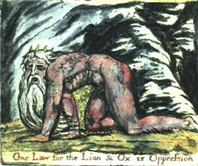

Bir keresinde, alevler içinde bir İblis gördüm, bir bulutun üzerine oturan bir Meleğin önünde beliriverdi ve İblis iniltiyle şunları söyledi:
‘Tanrıya ibadet, herkesin kendi zekası ölçüsünde, diğer insanlardaki Tanrı vergisine saygı göstermek ve en yüce insanları sevmektir. Büyük insanları kıskanan ve onlara kara çalanlar, Tanrıdan nefret ederler; çünkü başka Tanrı yoktur.’
Bu sözleri duyan Melek az kalsın masmavi olacaktı, fakat kendini toparladı ve sarı oldu ve nihayet beyaz ve pembe; gülümseyerek yanıtladı.
‘Seni Putperest, Tanrı tek değil midir, ve İsa Mesih’te görünür olmamış mıdır? Ve İsa Mesih on emri onaylamadı mı? Ve diğer insanların hepsi, birer budala, günahkâr ve hiçlik değil midir?
İblis yanıtladı: ‘Budalayı havanda buğday ile döv, gene de budalalığı bırakmaz yakasını. İsa Mesih en yüce insansa eğer, en yüce biçimde sevmelisin onu. Şimdi dinle, on emri nasıl onayladığını: sebt günüyle ve onun Tanrısıyla alay etmedi mi? Kendisi yüzünden ölenleri katletmedi mi? Zina yapan kadından cezayı kaldırmadı mı? Kendisini geçindirmek için başkalarının emeğini çalmadı mı? Pilatus’un huzurunda savunma yapmadığında, yalancı tanıklık etmedi mi? Havarileri için dua ettiğinde ve onlara, seni evlerine almayı reddedenlere ayaklarının tozunu silk diye buyurduğunda, gıpta etmedi mi? Diyorum ki sana, bu on emri yıkmadan hiçbir erdem varolamaz. İsa, tepeden tırnağa erdemdi ve kuralları değil, dürtüleri temsil etti.’
O böyle konuşadursun, ben Meleğe baktım, kollarını açmış alevleri kucaklıyordu, ve yandı ve İlyas olarak doğdu.
Not: Şimdi bir İblise dönüşmüş bu Melek, benim çok özel dostumdur. Çoğu zaman birlikte, cehennemsi ya da şeytani anlamıyla okuruz İncil’i, ki iyi davranırlarsa, dünya da kavrar bunları.
Benim bir de Cehennem İncili’m var, ister iyi davransınlar ister kötü, dünyanın sahip olacağı.

Aslan ve Öküz için tek yasa Zulümdür.